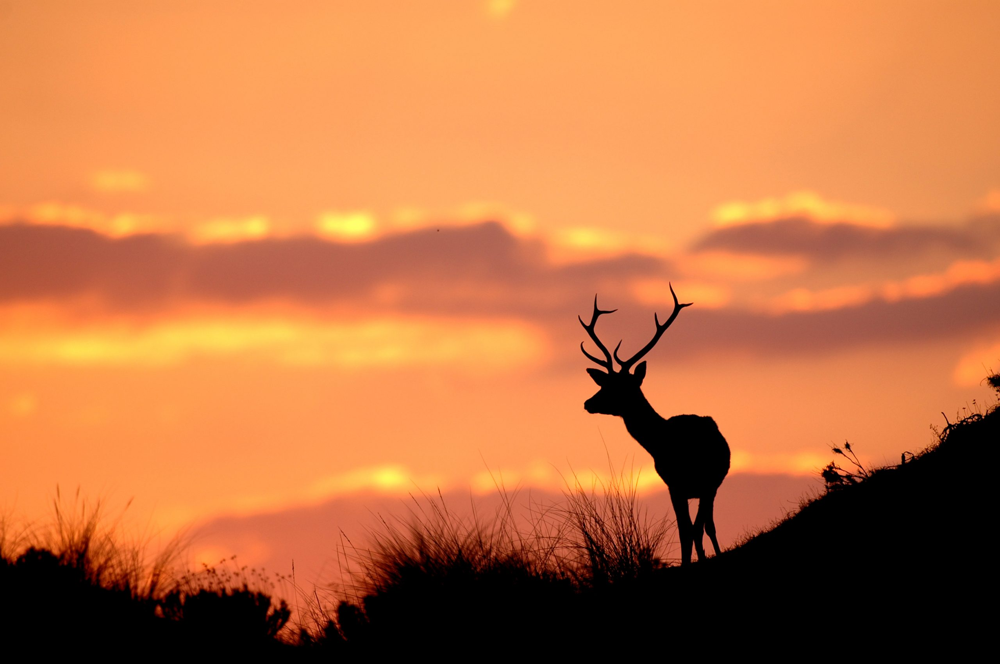
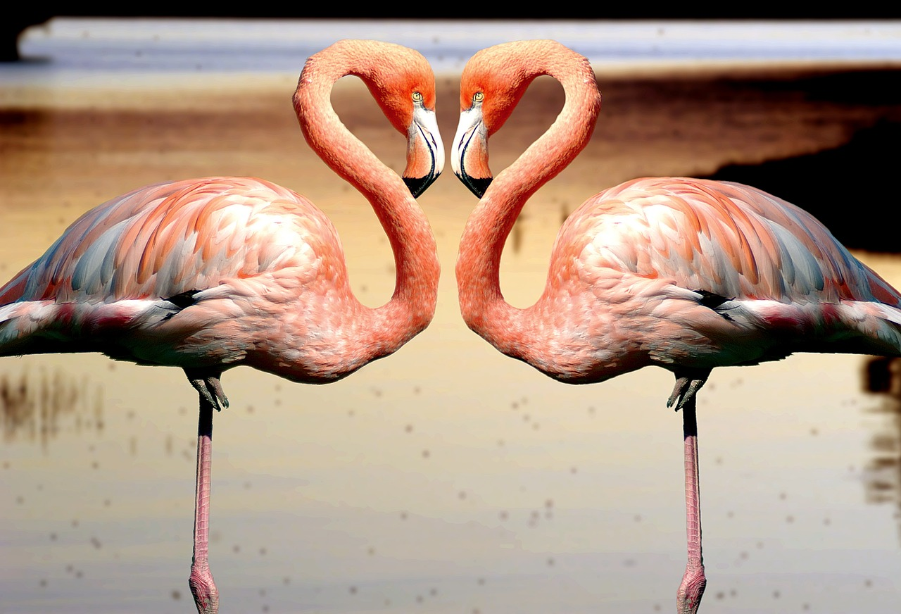

Fotografía Paisajística
La fotografía de paisajes se centra en capturar la belleza de los entornos naturales, como montañas, ríos, bosques y cielos. Este género busca trasladar al espectador al lugar representado, evocando sensaciones de inmensidad y asombro.
Características principales:
- Composición: La correcta disposición de los elementos en la imagen es esencial para lograr equilibrio y armonía. Conocer las reglas de composición, como la simetría y la creación de profundidad, ayuda a generar fotografías impactantes.
- Luz natural: La iluminación juega un papel crucial, ya que en entornos naturales no siempre es posible utilizar luz artificial. Comprender la dirección, calidad y variaciones de la luz según la hora del día o las condiciones climáticas es fundamental.
- Técnica: Es importante dominar aspectos como la apertura del diafragma, la velocidad de obturación y la profundidad de campo para capturar imágenes nítidas y bien expuestas.
Fotógrafos de referencia:
- Ansel Adams: Reconocido por sus impresionantes imágenes en blanco y negro de paisajes estadounidenses, especialmente del Parque Nacional de Yosemite.
- Yann Arthus-Bertrand: Destacado por sus fotografías aéreas que muestran la diversidad y belleza de nuestro planeta.
- Isabella Tabacchi: Fotógrafa italiana que captura paisajes evocadores, destacando por su uso magistral de la luz y la composición.
Este tipo de fotografía se beneficia de la celebración de distintos certámenes en los que he participado y obtenido diversos premios que te muestro a continuación.
Fotos premiadas en certámenes

Concurso nacional de fotografía sobre parques Nacionales españoles 2020.

II Concurso Internacional de Fotografía de la Naturaleza.
